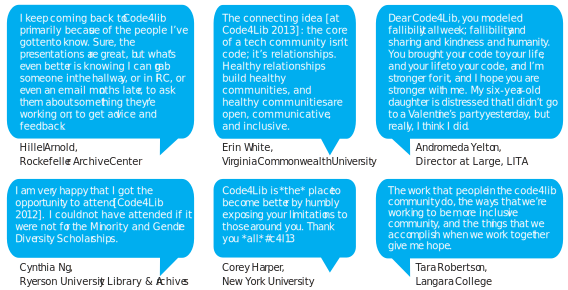

The conference for people who code for libraries.
An annual gathering of technologists from around the world, who largely work for and with libraries, archives, and museums and have a commitment to open technologies.
What are people saying?
(Make this not an image.)

Welcome to Philadelphia
Philadelphia is well known for its important role in US history, but it is also dynamic and modern city, with a vibrant art scene, incredible food, and great public transit, as well as hundreds of libraries, museums and universities. The New York Times recently ranked Philly as the #3 place in the world to visit, and we couldn't agree with them more. Plus Philly packs it all into a fairly small and compact Center City that is easy to walk around. So many of us are a part of the code4lib community — we're excited to be able to host the national code4lib conference!